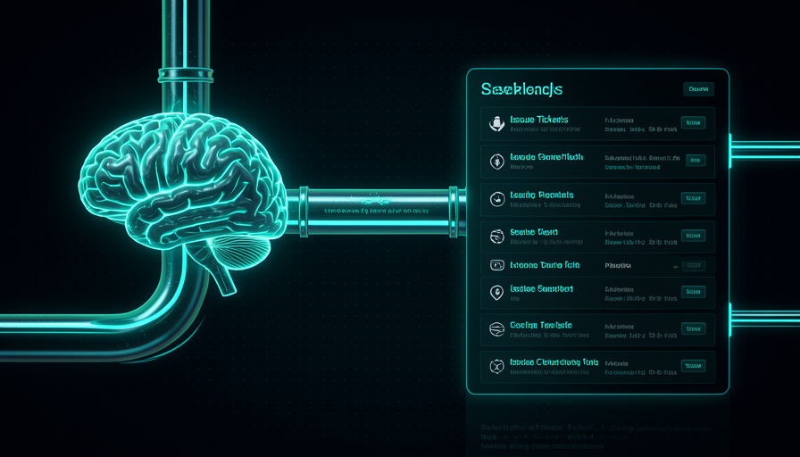
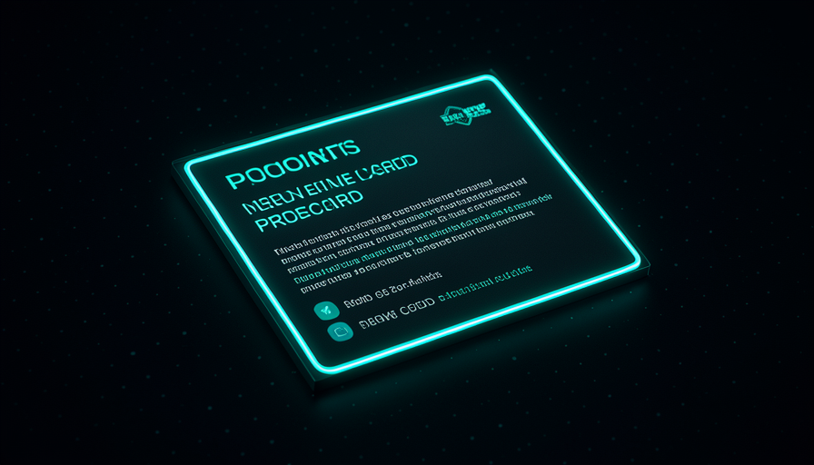
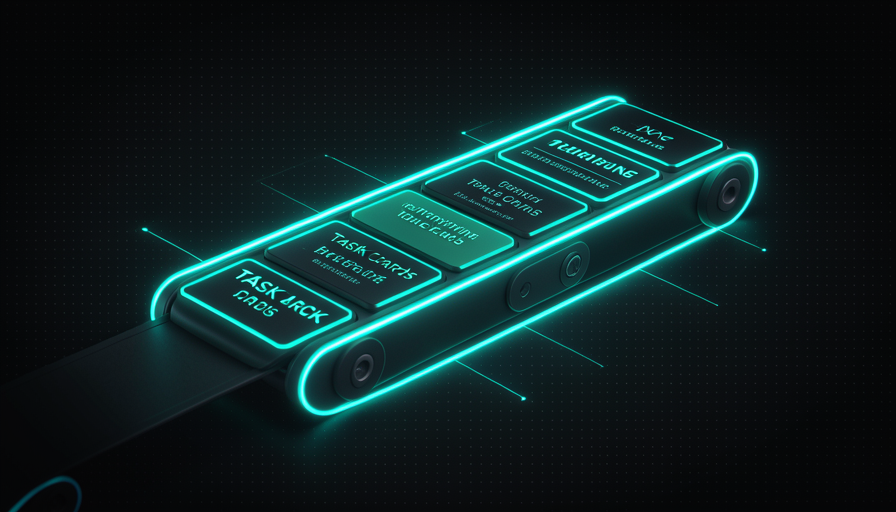

📖 Glosario vivo (lee antes — vuelve siempre que lo necesites)
Esta ruta está «lista para copiar». Aquí definimos los términos NUEVOS de este módulo. Los fundamentos (modelo, agente, skill, prompt) ya vienen de la Ruta 1; si los olvidaste, vuelve allí.
🗺️ Visión general del pipeline
🧠 Imagínalo así: una cocina de restaurante. Primero el mesero te entrevista ("¿con papas fritas? ¿a término medio?") hasta que el pedido no tenga ambigüedades. Después esto se convierte en una comando escrito (el documento). Y el comando es dividida en estaciones (ensalada, sopa, postre): cada cocinero elige lo suyo. La idea que tenías en mente se convirtió en trabajo organizado, sin que tengas que ir hasta la cocina.
Este módulo es el corazón de la forma en que Matt Pocock delega sin perder el control. En vez de una skill gigante que lo hace todo, él encadena tres skills pequeñas en un pipeline: grill-me → two-PRD → to-issues. Como resume en el transcript: «encadena: grill-me → two-PRD → to-issues" — esto mantiene "la mayoría de las descripciones de la IA ocultas y el conocimiento en manos del humano". Cada paso tiene un solo trabajo, y lo apruebas antes de pasar al siguiente.
La ruta es literal: sales del "brain" (la idea en bruto) y llega a "backlog" (una cola de issues listas). El porqué de dividirlo en tres: Pocock prefiere procedimientos a dejar que el modelo decida todo — "I know my skills, I don't want to delegate my thinking" ("conozco mis skills, no quiero delegar mi pensamiento"). Cada eslabón es un punto donde puedes detenerte, corregir y seguir. El error común aquí es querer una única mega skill que vaya «de la idea al código» sin pausas: pierdes visibilidad y la IA llena los vacíos con suposiciones erróneas.
Tres skills pequeñas en serie superan a una mega-skill que lo hace todo: ves y corriges cada eslabón.

⚠️ Error común de principiante
Querer "una skill que lleve de la idea al deploy". Sin pausas, la IA decide todo por su cuenta y solo descubres los errores al final. El pipeline existe precisamente para darte un botón de "pausa" entre cada etapa.
En 1 frase: el pipeline lleva la idea al backlog en tres pasos, con tu aprobación en cada eslabón, sin una mega-skill de caja negra.
🔥 Paso 1 — grill-me
🧠 Imagínalo así: un abogado experimentado antes de aceptar tu caso. No dice "ok, entendí" — te interroga: «¿y si pasa X? ¿pensaste en Y? ¿por qué no Z?». Al final, ambos ven el caso de la misma manera. grill-me hace esto con tu idea de producto.
A grill-me convierte el modelo en un entrevistador adversarial: hace preguntas, plantea ideas que no habías considerado y sigue hasta llegar a un entendimiento compartido. Pocock la llama «unreasonably effective» (absurdamente eficaz). La usas como sustituto del plan mode: «aquí está mi idea, entrevístame, lleguemos a un entendimiento y eliminemos las rarezas antes de implementar».
El texto exacto de la skill (del transcript): "Interview me relentlessly about every aspect of this plan until we reach a shared understanding. Walk down each branch of the design tree, resolving dependencies between decisions one-by-one. For each question, provide your recommended answer. Ask the questions one at a time. If a question can be answered by exploring the codebase, explore the codebase instead." Fíjate en dos reglas de oro: una pregunta a la vez (no te ahoga) y si se puede responder mirando el código, él mira el código en lugar de preguntar. El error común: responder en automático. Grill-me solo vale la pena si pelear de vuelta — discrepar de sus recomendaciones cuando tenga sentido.
Interview me relentlessly about every aspect of this plan until we reach a shared understanding. Walk down each branch of the design tree, resolving dependencies between decisions one-by-one. For each question, provide your recommended answer. Ask the questions one at a time. If a question can be answered by exploring the codebase, explore the codebase instead.
"Walk down each branch of the design tree" — una pregunta a la vez, resolviendo dependencias.

En 1 frase: grill-me te entrevista con una pregunta a la vez hasta que tú y la IA vean el plan de la misma manera.
📄 Paso 2 — two-PRD
🧠 Imagínalo así: después de hablar de la remodelación de la casa con el arquitecto, convierte la conversación en una plano firmado. Ya no es «una suposición»: se convirtió en un documento que el albañil lee y sigue. El two-PRD hace ese plano a partir de tu entrevista.
La entrevista de grill-me está en el contexto de la conversación, pero una conversación no es un entregable. El PRD es el producto de este paso: un documento estructurado que dice lo que construir, por qué, e cuáles requisitos. La skill two-PRD lee todo lo que quedó acordado en la entrevista y escribe este documento por ti — visión, decisiones consecuentes, requisitos y criterios de aceptación.
¿Por qué escribir un PRD en vez de ir directamente al código? Porque el PRD es un artefacto revisable: lees, ajustas una frase, eliminas un requisito que no quieres — antes de que exista una sola línea de código. Encaja directamente con el prompt favorito de David citado en el transcript: "describe my vision, list out the 10 decisiones de mayor impacto (software design / architectural / product) que darán forma a este proyecto, y entrevístame hasta que entiendas el 98 %" — describe mi visión, enumera las 10 decisiones más importantes y entrevístame hasta entender el 98 %. Esas 10 decisiones se convierten en la columna vertebral del PRD. El error común: aceptar el primer PRD sin leerlo. Es tu borrador para editar, no una sentencia final.
🔬 Ejemplo resuelto: "app de notas con recordatorios" se convierte en PRD
Ejecutas /grill-me con la idea en bruto. La IA pregunta una cosa a la vez: "¿recordatorios a una hora fija o por ubicación? ¿Se sincroniza entre dispositivos? ¿Funciona sin conexión desde el inicio?". Respondes y discrepas en una sola frase («no, sin geolocalización en la v1»). Después ejecutas /two-PRD. Sale esto:
## Visión — capturar notas rápidas y recibir un recordatorio en el momento adecuado.
## Decisiones consecuentes
1. Recordatorios solo a una hora fija (la geolocalización queda para la v2).
2. Primero sin conexión, sincronización en segundo plano.
3. Sin inicio de sesión en la v1 — datos locales.
## Requisitos — CRUD de notas; programar/cancelar recordatorios; notificación local.
## Criterios de aceptación — la nota persiste después de cerrar la app; el recordatorio se activa en ±1 min.
Fíjate: cada "decisión importante" es una elección que confirmaste en grill-me. El PRD solo la formalizó.
Profundiza (opcional): ¿por qué un PRD y no un plan informal?
Un plan que solo está en el chat desaparece cuando se llena el contexto o ejecutas /clear. El PRD es un archivo: versionable en git, comentable y —crucial para el siguiente paso— algo que la skill to-issues puede leer de forma estable. Pocock prefiere artefactos sólidos entre los eslabones del pipeline precisamente para que cada skill tenga una entrada predecible, no "lo que quedó de la conversación".
En 1 frase: two-PRD destila la entrevista en un documento revisable — el plano del producto, antes del código.
🎫 Paso 3 — to-issues
🧠 Imagínalo así: la comanda completa del pedido se divide en fichas por estación — una va a la parrilla, otra a la ensalada, otra al bar. Cada cocinero toma su ficha y se pone manos a la obra. to-issues divide el PRD en fichas (issues) que un agente puede tomar de la cola.
O to-issues lee el PRD y crea issues en GitHub — una por cada fragmento ejecutable. Esto conecta con la forma en que Pocock piensa el trabajo: "I mostly think about these as QUEUES, not loops" ("pienso en esto como colas, no como bucles"). El backlog es esta fila: «all development is just a queue of tasks: PMs add to the queue, you complete them; multiple nodes (devs) pick off the queue». Aquí los «nodos» pueden ser agentes.
El detalle que convierte esto en automatización son las etiquetas (etiquetas). En el ejemplo real del transcript (frame 74), el issue #795 recorre las etiquetas agent:explore → agent:in-progress, y el bot de GitHub Actions publica un «Triage» con TL;DR + Difficulty (dificultad). Es decir: la issue no es solo una anotación, sino un activador. El error común: crear issues gigantes y vagos («hacer la app»). La clave es dividirlos lo suficiente para que un agente AFK pueda tomar una y terminar.
Title: Agendar e cancelar lembrete de uma nota Labels: agent:explore, area:reminders, size:S ## Contexto (do PRD) Decisão #1: lembretes só por horário fixo na v1. ## Tarefa - Permitir definir um horário para uma nota existente. - Agendar uma notificação local nesse horário. - Permitir cancelar o lembrete. ## Critério de aceite - Lembrete dispara em ±1 min do horário definido. - Cancelar remove a notificação agendada.

En 1 frase: to-issues divide el PRD en issues con labels: un backlog (cola) listo para que los agentes lo tomen.
⛓️ Encadenamiento completo
🧠 Imagínalo así: una línea de montaje con tres estaciones y un inspector (tú) entre ellas. La pieza no pasa a la siguiente estación sin que el inspector dé el «visto bueno». Es rápido, pero nadie deja pasar un defecto.
Ahora lo juntamos todo. Esta es la secuencia real de comandos del pipeline: es lo que realmente escribes en Claude Code, con lo que produce cada paso anotado. Copia, adapta los nombres a tu proyecto y ejecútalo. Recuerda: entre un / y el siguiente, tú lees y apruebas. No es un botón que lo hace todo: son tres botones contigo en el medio.
# PIPELINE: do brain ao backlog (Claude Code, Opus 4.8 medium) # --- PASSO 1: grill-me --------------------------------------- # voce cola a ideia crua e invoca a skill de entrevista /grill-me > Ideia: app de notas com lembretes por horario. Me entreviste. # PRODUZ: um entendimento compartilhado (Q&A na conversa). # -> VOCE APROVA antes de seguir. # --- PASSO 2: two-PRD ---------------------------------------- # transforma a entrevista alinhada num documento de produto /two-prd # PRODUZ: docs/PRD.md (visao, 10 decisoes, requisitos, aceite) # -> VOCE LE e edita o PRD.md antes de seguir. # --- PASSO 3: to-issues -------------------------------------- # le o PRD e cria as issues no GitHub, uma por tarefa /to-issues docs/PRD.md # PRODUZ: issues no GitHub com labels (ex.: agent:explore, size:S) # -> VOCE revisa o backlog; ajusta labels/prioridade. # RESULTADO: brain -> backlog. Agentes AFK pegam da fila.
Recuperación rápida: ¿cuál es el ORDEN correcto del pipeline?
En 1 frase: tres skills en serie con un punto de control humano entre cada una — delegas el trabajo, no el pensamiento.
🧑✈️ Dónde está el humano
🧠 Imagínalo así: el rey medieval (analogía de David en la transcripción). No va personalmente a luchar en cada batalla, pero los problemas le llegan (invasión, hambre, propuesta de alianza) y él prioriza: 50 problemas, solo 3 críticos. Delega la ejecución, nunca el control.
Lo que distingue el método de Pocock de "dejar que la IA pilotee" es dónde la persona se queda. Prefiere procedimientos a abilities justamente para quedarse «al volante»: «I want to be in the driver's seat, not delegate my thinking» («quiero estar al volante, no delegar mi pensamiento»). En el pipeline, estás presente en cada eslabón: activas la grill-me, discutes las respuestas, editas el PRD y priorizas/ajustas las issues.
Pero —y aquí está la clave de AFK— el humano se queda en los puntos de control, no al escribir. Así piensa Pocock en las colas: tú prioriza y revisa, mientras los agentes toman issues y las ejecutan. El objetivo es "push human-in-the-loop checkpoints further toward the final output" (llevar los checkpoints humanos cada vez más cerca del resultado final), del transcript. El error común es el extremo opuesto: convertirte en un cuello de botella, querer revisar cada carácter. La meta no es estar en todo, sino estar en los pocos puntos que deciden el rumbo. El conocimiento está en ti; la ejecución escala con los agentes.
Recuperación rápida: ¿por qué Pocock prefiere «procedures» en el pipeline?
En 1 frase: la persona se queda en los pocos checkpoints que definen el rumbo: delega la ejecución, nunca el mando.
🧾 Resumen del módulo
Próximo módulo:
5.4 — Setup AFK completo: Claude Code + Opus 4.8, sandboxes (Sand Castle) y cómo traer de vuelta los commits.